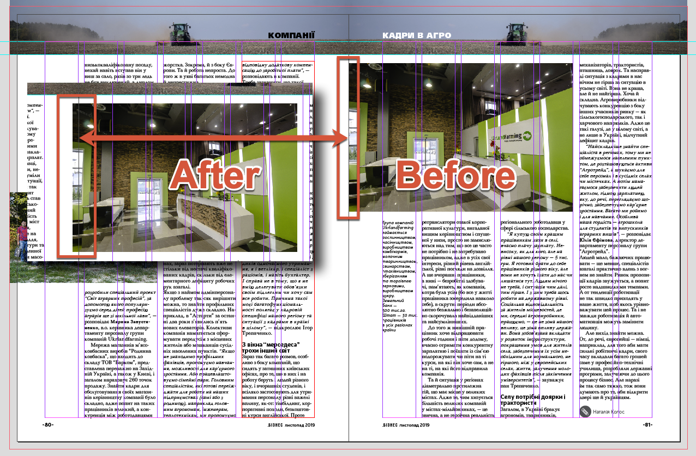
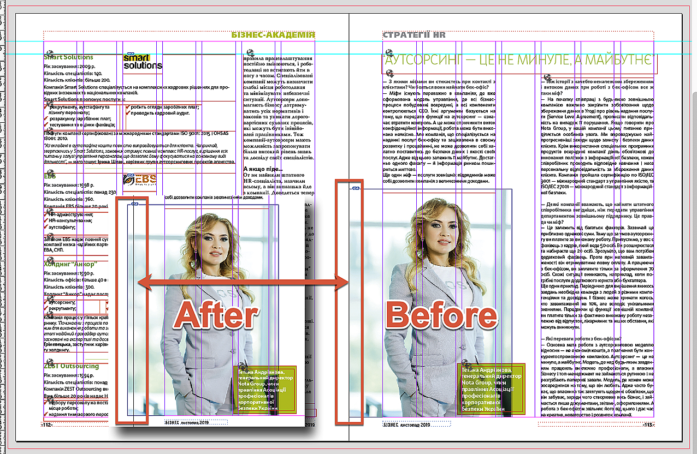
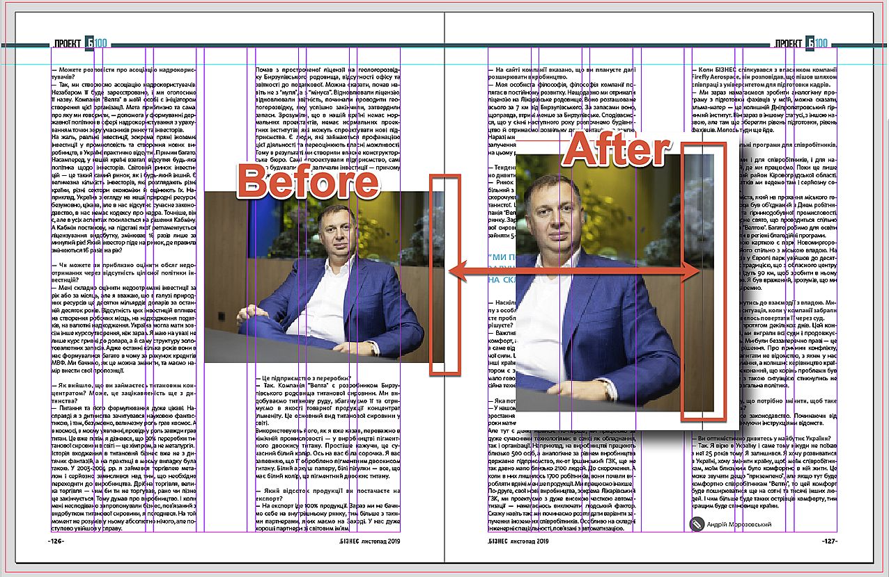
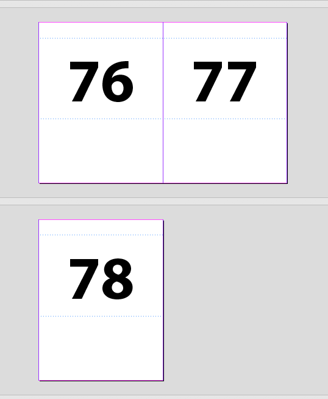
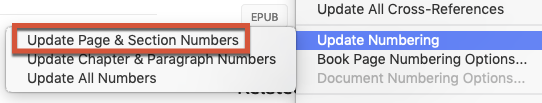
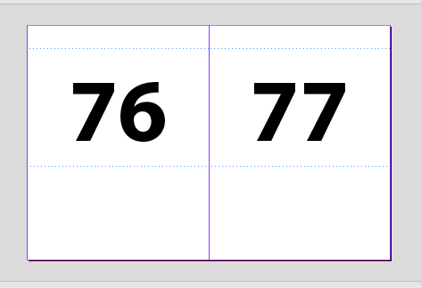
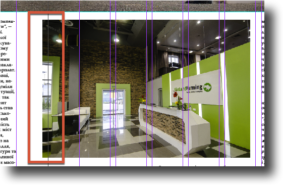
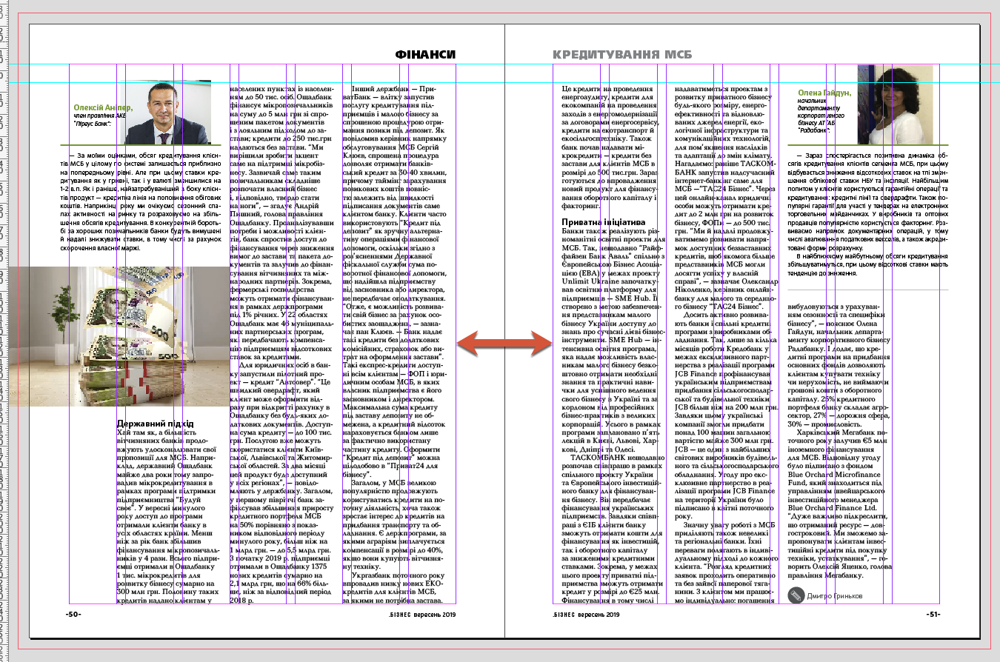

Bug in book’s Update Numbering feature
Whenever I update numbering in a book (Update Numbering > Update Page & Section Numbers) while pages are shifted from recto to verso or vice versa, some elements on some pages are randomly moved a little — approx. 4 mm. — to the opposite page on the spread.
This happens in InDesign CC 2018, CC 2019 and 2020. I suspect it also happens in older version but can’t check it because don’t have them anymore.
Here are three screenshots illustrating what happened in the latest issue of our magazine:



I was able to recreate the problem and created a package consisting of the three problematic files and four test files with empty pages to have the whole block from pages 3 to 130 as in the real magazine.
Here are the steps to reproduce the hitch:
- Open Test1.indd, add one page and save. Now it ends up with verso (#78) instead of recto (#77)

- Update Numbering > Update Page & Section Numbers

- Remove one page in Test1.indd and save. Now it ends up with recto (#77) again

- Update Numbering one more time
- Open pages 80-81, 112-113 and 126-127. Note: the pictures, originally adjacent to the inner edge, now jut out on the neighboring page.

To fix the issue, I tried the following but nothing has worked:
- Suspecting that something went wrong with the files, I made the ‘indd-idml-back to indd’ round trip.
- Reset the zero point
- Moved the problematic images a couple millimeters away from the edge.
- Changed the ruler origin from page to spread.
This happens not only with graphic frames: usually most of the objects on the spread are shifted, like so:

Note: originally the text frames were aligned to guides, but after updating numbering, were moved away from spine.
If you are willing to test it yourself, click here to download the files (183 Mb, InDesign 2020, IDML-files included for older versions).
Update:
as Uwe Laubender pointed out:
The amount that your elements are moving is exactly the amount that inner and outer margins are differing in size.
Inner margins are 22 mm
Outer margins are 18 mm
That is no coincident!
Hm. Shall I predict that if the difference were 0 mm, that no element would move?
And yes indeed, setting both margins — inside & outside — to 20 mm seems to solve the problem: the images don't shift. So, as a workaround, theoretically it's possible to make both margins equal in InDesign and later on imposing at the printers, move pages 2 mm away from spine.
For details, click here to read the whole discussion on the Adobe InDesign forum.
Here I posted the script to solve the problem.